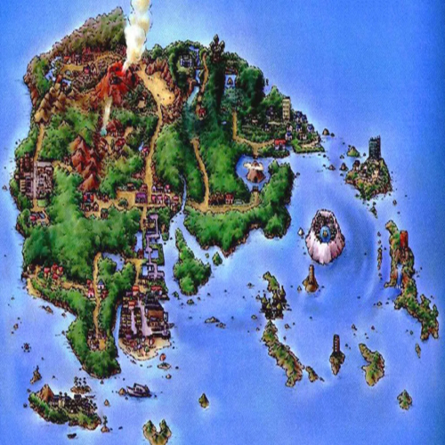

Johto
1,500 years prior to Pokémon Gold, Silver, Crystal, HeartGold, and SoulSilver,
the place now known as the Ruins of Alph was built by an ancient civilization
that wished to co-exist with Unown, which bear great similarity to the alphabet
letters. At some point later, outsiders began to gather near the ruins.
As the Unown were timid creatures, they rejected contact with anyone but
the civilization that protected them. To ensure the Unown's well being,
the Ruins of Alph's inhabitants decided to leave Johto, but not without
devising complicated puzzles so that one day the Unown could be summoned again.
Their quest led the people to a mountain far to the north, where they met
a group of Sinnoh people from Hisui. Together, the two groups built a temple
in honor of Arceus, which incorporated elements from both the Ruins of Alph
and the Temple of Sinnoh, which became what is now known as the Sinjoh Ruins.
The ritual of honoring Legendary Pokémon through dance circulated back to
Johto, specifically to Ecruteak City.
Læra meir...

Hoenn

At the beginning of the Pokémon world, Primal Kyogre and Primal Groudon were
formed from the natural energy in the region and then proceeded to fill the sea
and create land, respectively. Meanwhile Rayquaza resided in the ozone layer.
A chance meeting turned the Kyogre and Groudon into rivals, and a conflict for
dominance over the Pokémon world began. This battle continued until Rayquaza
came down to earth and quelled it, forcing the two to retreat into their own caverns,
where they slumbered in for many years. 2,000 years prior to the events of
Pokémon Omega Ruby and Alpha Sapphire, Hoenn was plagued by meteor showers,
which turned the homeplace of the Draconid people into Meteor Falls.
The region was overflowed with natural energy and Primal Groudon and Primal
Kyogre awakened again to fight over it. They ravaged the earth and were only
defeated and put to slumber once again by Rayquaza when the Draconids summoned
it through a wish on a meteor. The people of region then began to revere
Rayquaza as their savior.
Læra meir
Sinnoh
According to several myths, after the creation of the Pokémon of myth,
the Pokémon universe, and the Lake guardians, Arceus created Mount Coronet,
then the rest of the Hisui region, then the rest of the Pokémon world using its 1,000 arms.
Arceus also created the Adamant Crystal, the Lustrous Globe, and Griseous Core,
materials related to the three Pokémon of myth, Dialga, Palkia, and Giratina.
At some point, Uxie, Mesprit, and Azelf dove into the caves at the bottom of three lakes in the region:
Lake Verity, Lake Valor, and Lake Acuity, respectively, which granted them the title "lake guardians."
At some point, Heatran was born from the lava of Firespit Island's volcano. Additionally, after
the creation of all 5 Legendary giants, their creator Regigigas fell into a deep slumber within
Snowpoint Temple, being only awakened by unlocking the door of the chamber where it was sealed in.
Læra meir